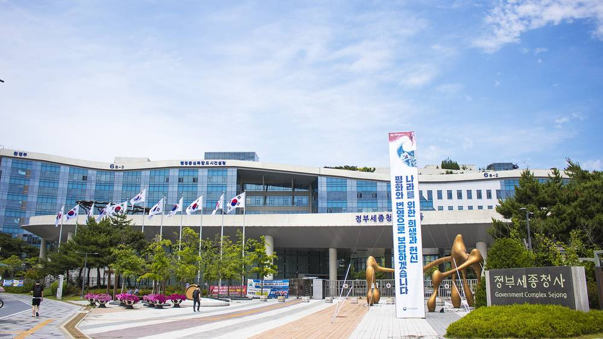

햇빛소득마을 추진단 내년 운영경비 4억6,100만 원 새로 편성…1차 선정 87곳 중 실제 추진 가능한 마을은 13곳

조건부 선정 74곳 가운데 59곳(75.6%)은 전력망 미비가 원인…선정 마을 수보다 사업 개시 기간·주민 귀속소득으로 성과를 따져야 한다는 지적
행정안전부 햇빛소득마을 추진단의 운영경비로 2027년 예산안에 4억6,100만 원이 새로 편성됐지만, 올해 1차 공모에서 뽑힌 87개 마을 가운데 10월 현재 실제로 사업을 추진할 수 있는 곳은 13곳(14.9%)에 그쳤다. 나머지 74곳은 부지 임대 협의나 계통연계 같은 보완을 전제로 조건부 선정됐고, 그 가운데 59곳(75.6%)은 전력망이 갖춰지지 않은 것이 주된 원인이었다. 지난 2월 13일 국무총리훈령으로 행안부에 한시 설치된 추진단은 관계기관 파견인력 27명으로 꾸려졌고 지자체 인력 3명이 더 파견될 예정이지만, 금융·전력계통·부지 같은 정책수단은 기후에너지환경부와 농림축산식품부 등이 나눠 맡고 있어 추진단이 직접 하는 일은 사업 공고부터 선정 결과 안내까지라는 지적이 나왔다. 정부는 ESS 구축과 송·배전망 보강을 추진하면서 법 개정으로 1MW 이하 주민참여형 발전사업의 계통 우선접속 근거를 마련했으나, 구체적인 적용 범위와 요건은 하위법령 등 후속 절차에서 정해진다. 내년 마을 선정·평가와 교육·컨설팅, 통합관리시스템 사업비는 기후부 전력산업기반기금에 잡혀 있고 행안부 예산은 사무공간 임차·공공요금 같은 추진단 자체 경비에 몰려 있어, 운영경비가 실제 업무 수요에 맞게 산정됐는지 확인하기 어렵다는 지적도 함께 나왔다. 행안부는 2026년 700개 마을을 시작으로 2027년 2,200개, 2030년까지 3,000개 이상을 만든다는 목표를 세웠는데, 앞으로는 신규 선정 마을 수보다 사업 개시까지 걸린 기간과 조건부 사유 해소 정도, 발전수익·주민 귀속소득처럼 주민이 체감하는 지표로 성과를 관리해야 한다는 주문이 뒤따른다.
시민에너지 관점
1차 선정 마을 87곳 가운데 13곳만 사업에 들어갈 수 있고 조건부 74곳 중 59곳이 전력망에 막혀 있다면, 마을 수를 늘리기보다 이미 뽑힌 마을이 실제로 전기를 팔기까지의 길을 여는 일이 먼저다. 스코틀랜드 정부는 지역에너지 지원 프로그램 CARES를 통해 공동체 에너지 단체에 지역 담당자를 붙이고 타당성 조사부터 인허가·운영까지 자문과 초기 자금을 함께 지원해 왔다. 계통 문제는 추진단 혼자 풀 수 없다는 지적이 맞지만, 그렇기 때문에 추진단은 선정 창구에 머물지 말고 마을 곁에서 부처·전력 당국과의 협의를 밀어 주는 조정자가 돼야 한다. 특히 수익 배분과 마을조직 운영을 돕는 기능이 업무계획에 없다는 점은 서둘러 메워야 하며, 마을이 발전소의 주인으로 설 수 있도록 돕는 일에 맞춰 예산과 인력을 다시 짜야 한다.
출처: 수소신문 2026-11-02 조대인 원문 보기
「日差し所得村」推進団、来年度運営経費4億6,100万ウォンを新規計上…第1次選定87村のうち実際に事業推進が可能なのは13村
条件付き選定74村のうち59村（75.6%）は電力網の未整備が原因…選定数より事業開始までの期間や住民に帰属する所得で成果を測るべきとの指摘
韓国行政安全部に置かれた「日差し所得村（햇빛소득마을）」推進団の運営経費として2027年度予算案に4億6,100万ウォンが新たに計上されたが、今年の第1次公募で選ばれた87村のうち、10月現在で実際に事業を推進できるのは13村（14.9%）にとどまっている。残る74村は用地の賃借協議や系統連系などの補完を前提に条件付きで選定され、そのうち59村（75.6%）は電力網が整っていないことが主な原因だった。2月13日に国務総理訓令で行政安全部に時限的に設置された推進団は、関係機関からの派遣人員27人で構成され、自治体職員3人も追加派遣される予定だが、金融・電力系統・用地といった政策手段は気候エネルギー環境部や農林畜産食品部などが分担しており、推進団が直接担う業務は事業公告から選定結果の案内までにとどまるとの指摘が出た。政府はESSの整備と送配電網の補強を進め、法改正で1MW以下の住民参加型発電事業に系統への優先接続の根拠を設けたが、具体的な適用範囲や要件は下位法令などの後続手続きで決まる。来年度の村の選定・評価や教育・コンサルティング、統合管理システムの事業費は気候エネルギー環境部の電力産業基盤基金に計上され、行政安全部の予算は事務所の賃借や公共料金など推進団自体の経費に集中しているため、運営経費が実際の業務需要に基づいて算定されたのか確認しにくいとの指摘も出た。行政安全部は2026年の700村を皮切りに2027年に2,200村、2030年までに3,000村以上をつくる目標を掲げているが、今後は新規選定数よりも事業開始までの期間や条件付き理由の解消度、発電収益・住民帰属所得など住民が実感できる指標で成果を管理すべきだとの注文が続いている。
市民エネルギーの視点
第1次選定の87村のうち事業に入れるのが13村だけで、条件付き74村のうち59村が電力網で足止めされているのなら、村の数を増やすより、すでに選ばれた村が実際に電気を売るまでの道を開くことが先だ。スコットランド政府は地域エネルギー支援プログラム「CARES」を通じて、コミュニティエネルギー団体に地域担当者をつけ、事業化可能性調査から許認可・運営まで助言と初期資金をあわせて支援してきた。系統の問題は推進団だけでは解決できないという指摘は正しいが、だからこそ推進団は選定窓口にとどまらず、村のそばで省庁や電力当局との協議を後押しする調整役にならなければならない。とりわけ収益配分や村組織の運営を支える機能が業務計画にない点は急いで埋めるべきであり、村が発電所の持ち主として立てるよう支える仕事に合わせて予算と人員を組み直す必要がある。
出典: 水素新聞 2026-11-02 チョ・デイン 原文を読む
韩国"阳光收入村"推进团明年新增运营经费4.61亿韩元…首批入选87个村中实际可推进的仅13个
74个附条件入选村中有59个（75.6%）卡在电网不足…有意见认为应以项目启动所需时间和居民所得收入而非入选数量衡量成效
韩国行政安全部下设的"阳光收入村（햇빛소득마을）"推进团在2027年预算案中新列运营经费4亿6,100万韩元，但今年第一批公开招募选出的87个村中，截至10月实际能够推进项目的只有13个（14.9%）。其余74个村是以协商租用用地、完成并网等补充条件为前提附条件入选的，其中59个（75.6%）的主要原因是电网尚未到位。推进团于2月13日依据国务总理训令在行政安全部临时设立，目前由相关机构派驻的27人组成，另有3名地方政府人员将加入，但金融、电网、用地等政策手段分别由气候能源环境部和农林畜产食品部等部门掌管，因此有意见指出推进团直接负责的工作只是从发布公告到通知入选结果。政府正在推进储能系统建设和输配电网加固，并通过修法为1MW以下居民参与型发电项目优先接入电网提供了依据，但具体适用范围和条件要由下位法令等后续程序确定。明年村庄遴选评估、教育咨询和综合管理系统的项目经费列在气候能源环境部的电力产业基础基金中，而行政安全部的预算集中在办公场所租赁、公用事业费等推进团自身经费上，因此也有意见认为难以确认这笔运营经费是否依据实际业务需求测算。行政安全部设定的目标是2026年选定700个村，2027年达到2,200个，到2030年建成3,000个以上，但外界要求今后应少看新入选数量，而以项目启动所需时间、附条件事由的解决程度以及发电收益、居民所得收入等居民能切身感受的指标来管理成效。
市民能源视角
如果首批入选的87个村中只有13个能够开工，74个附条件入选村中有59个被电网卡住，那么比起增加村庄数量，更要紧的是为已入选的村庄打通真正卖电的道路。苏格兰政府通过地方能源支持计划CARES，为社区能源团体配备地区专员，从可行性研究到审批和运营同时提供咨询与启动资金。电网问题确实不是推进团一家能解决的，但正因如此，推进团不能只做遴选窗口，而应在村庄身边推动与各部门和电力部门的协商，担起协调者的角色。尤其是业务计划中缺少帮助收益分配和村庄组织运营的功能，必须尽快补上，并围绕帮助村庄成为发电站主人这一目标重新安排预算和人力。
来源: 氢能新闻 2026-11-02 조대인（Cho Dae-in） 查看原文
Korea's Sunlight Income Village task force gets a new 461 million won operating budget, but only 13 of 87 first-round villages can actually proceed
Of 74 villages selected on conditions, 59 (75.6%) are held back by an inadequate grid; critics say success should be measured by time to start-up and resident income, not the number of villages selected
The 2027 budget proposal includes a new 461 million won for running the Sunlight Income Village (햇빛소득마을) task force at the Ministry of the Interior and Safety, yet of the 87 villages chosen in this year's first round, only 13 (14.9%) were actually able to move ahead with their projects as of October. The other 74 were selected on condition that they settle land leases, grid connection and other gaps, and for 59 of them (75.6%) the main obstacle was an inadequate power grid. The task force, set up temporarily at the ministry by a prime ministerial directive on February 13, is staffed by 27 people seconded from related agencies, with three more due from local governments, but because financing, grid access and land are handled by the Ministry of Climate, Energy and Environment, the Ministry of Agriculture, Food and Rural Affairs and others, critics note that the task force itself only covers the steps from announcing calls to notifying results. The government is pursuing energy storage and grid upgrades and has amended the law to give resident-participation power projects of 1MW or less a basis for priority grid connection, but the actual scope and requirements will be set by subordinate regulations and follow-up procedures. Next year's spending on village selection and evaluation, training and consulting, and an integrated management system sits in the climate ministry's Electric Power Industry Infrastructure Fund, while the interior ministry's share goes mostly to the task force's own costs such as office rent and utilities, prompting criticism that it is hard to tell whether the operating budget reflects real workload. The ministry aims to select 700 villages in 2026, reach 2,200 in 2027 and build more than 3,000 by 2030, but there are calls to judge performance from now on not by the number of new selections but by how long villages take to start operating, how far conditional issues are resolved, and indicators residents can feel, such as generation revenue and income that stays with residents.
Citizen Energy View
If only 13 of the 87 first-round villages can get started and 59 of the 74 conditional selections are stuck on the grid, opening the way for villages already chosen to actually sell power matters more than adding new ones. The Scottish government's CARES programme for local energy has assigned regional officers to community energy groups and provided both advice and early-stage funding from feasibility studies through consenting and operation. Critics are right that the task force cannot solve grid problems alone, but that is exactly why it should be more than a selection desk and act as a coordinator that pushes talks with ministries and power authorities on villages' behalf. The absence of any support for revenue sharing and running village organisations in its work plan needs to be filled quickly, and its budget and staff should be reorganised around helping villages stand as the owners of their power plants.
Source: Hydrogen News 2026-11-02 Cho Dae-in Read the original